Développement et logiciels
SLAM forme aux solutions logicielles et aux applications métiers : développement web, mobile, bases de données, et maintenance des programmes.

Solutions d'Infrastructure, Systèmes et Réseaux (SISR)
Étudiant en 2ème année BTS SIO — Promotion 2026 - 2027
Bienvenue
Bonjour, je m’appelle Jude Ondounga-Lekou ! Je suis passionné par l’informatique, les réseaux et la cybersécurité.
Actuellement étudiant en deuxième année de BTS SIO au sein de l’institut F2I, spécialisé en SISR, avec un intérêt particulier pour la mise en place, la gestion et la sécurisation des infrastructures informatiques.
Mon objectif est de devenir administrateur système et réseau, capable d’assurer la performance, la fiabilité et la protection des systèmes d’information au quotidien.
Je me dirige vers la spécialité SISR (Solutions d’Infrastructure, Systèmes et Réseaux). Ci-dessous, je compare rapidement cette option à SLAM.
SLAM forme aux solutions logicielles et aux applications métiers : développement web, mobile, bases de données, et maintenance des programmes.
SISR forme aux infrastructures, aux systèmes, aux réseaux et à la cybersécurité : installation, administration, sécurité et supervision des parcs informatiques.
Une progression claire, étape par étape, depuis le lycée jusqu’au BTS.
Institut F2I – Vincennes
13 mai – 26 juin 2026
94200 Ivry-sur-Seine
Institut F2I – Vincennes
I.A.E – Brazzaville
La Réconciliation – Brazzaville
Découvrez l'ensemble des technologies, outils et logiciels que je maîtrise en infrastructure, systèmes et réseaux.
Windows 10/11, Windows Server, Linux (Debian, Ubuntu, Kali).
Oracle VM VirtualBox, VMware Workstation, Proxmox, Hyper-V.
GLPI : gestion de parc informatique et tickets d'incidents.
MySQL, MariaDB, SQLite, phpMyAdmin, DB Browser.
PHP 8, HTML5, CSS3, Visual Studio Code.
XAMPP, MAMP pour développement et test d'applications.
Cisco Packet Tracer pour la modélisation de topologies.
Wireshark, Nmap, PuTTY (SSH/Telnet), Kali Linux.
Active Directory, OpenLDAP, DNS, DHCP, Syncthing.
Zabbix pour la supervision, pfSense pour le pare-feu.
Looping pour la modélisation et la conception de systèmes.
Microsoft Office (Word, Excel, PowerPoint), Adobe (Photoshop, Illustrator).
Questions fréquentes et points de veille. (Contenu en cours d'ajout)
La veille technologique consiste à surveiller l'évolution des outils, des standards et des pratiques pour rester à jour.
Identifier des tendances, anticiper les risques et améliorer les pratiques professionnelles.
Flux RSS, alertes Google, plateformes spécialisées, lectures techniques et tests pratiques.
Contenu à venir — je documenterai ici mes recherches et conclusions.
Sécurité, réseaux, virtualisation, bonnes pratiques d'administration et nouveautés cloud.
Pour toute question, projet ou opportunité, envoyez-moi un message ou utilisez mes coordonnées directes.
91940 Les Ulis, France